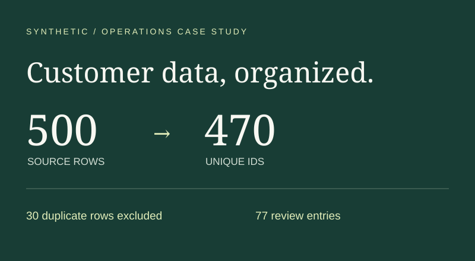

Synthetic / simulated · Data & operations
Customer Data Cleaning
A Python and spreadsheet exercise in record normalization, duplicate control and documented exceptions. Explore the verified dashboard and redacted evidence.
Explore the case study